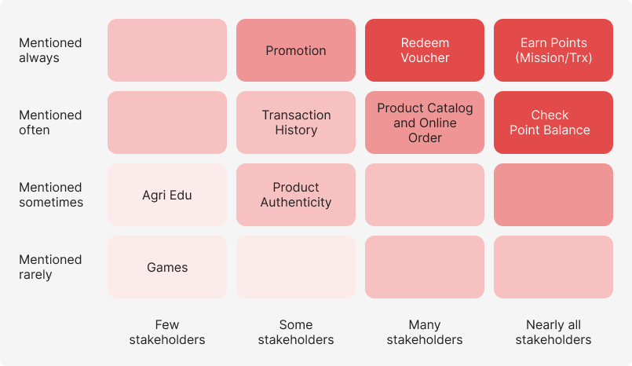
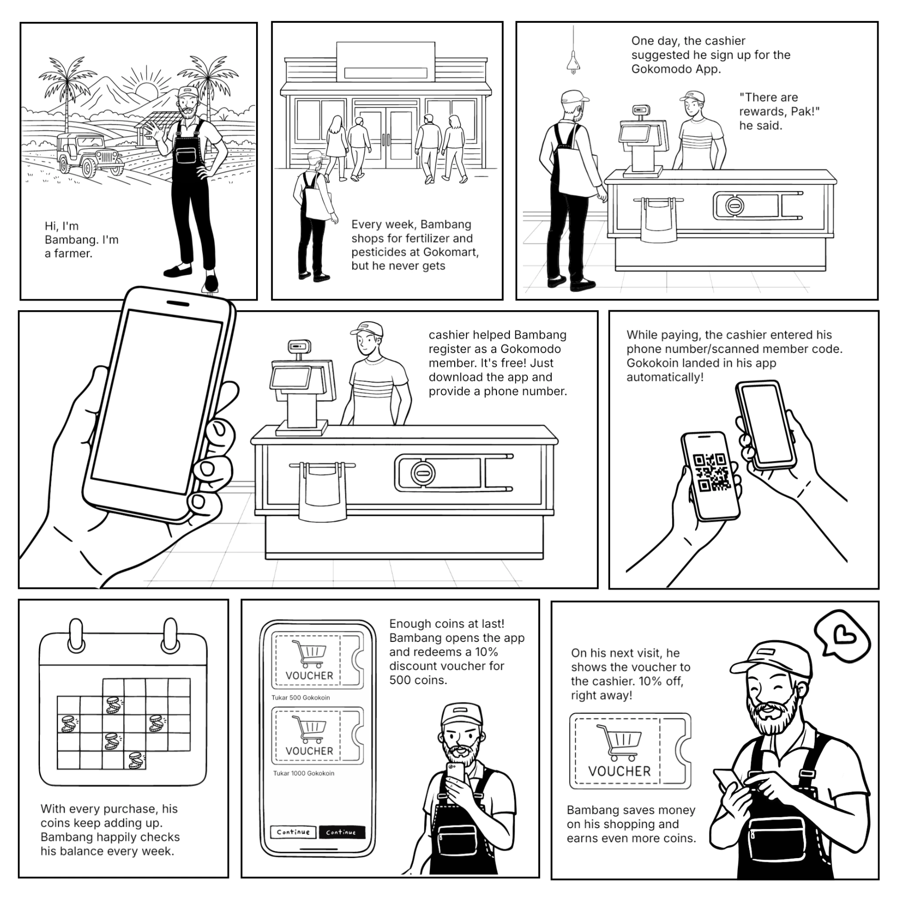
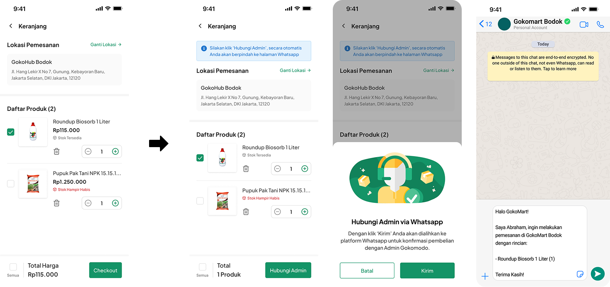
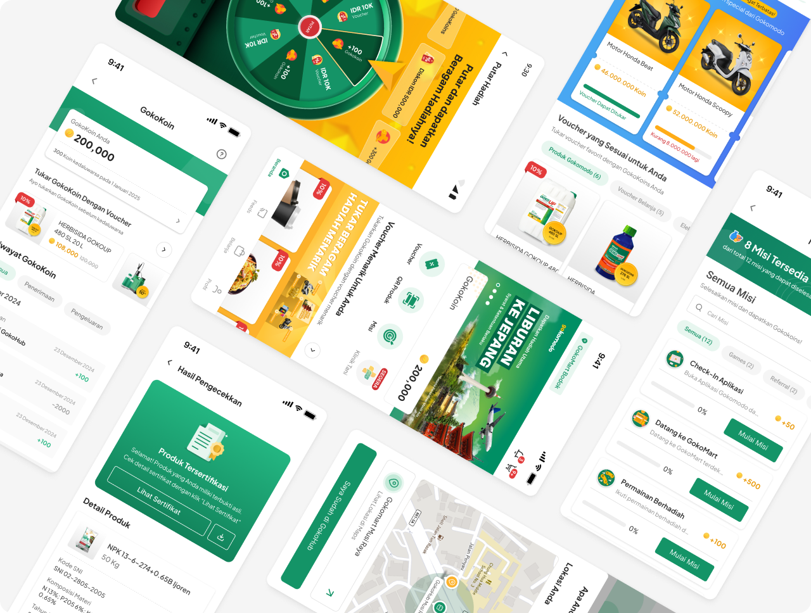
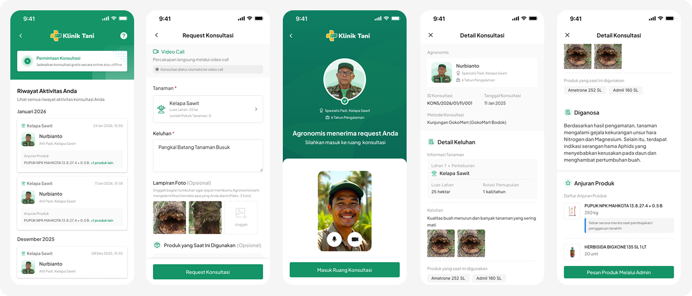
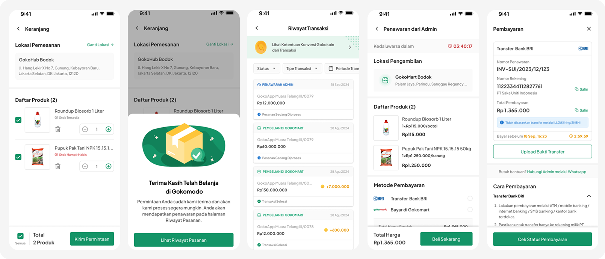

Building a Digital Loyalty Ecosystem for Indonesian Farmers

Context
Gokomodo serves farmers across all scales through Gokomart, a network of physical stores where they buy fertilizer, pesticides, and other farming essentials. Transaction volume kept growing, but there was no digital mechanism to retain loyalty or drive repeat order/visits. Without an incentive to keep coming back, Gokomodo risked losing customers to competitors who'd started a price war with cheaper alternatives.
Gokomodo App initiative came directly from top-level management, with three clear goals: increase transaction frequency, acquire new customers, and build long-term loyalty within Gokomodo's digital ecosystem.
Process and Research
As a top-down initiative, I led a design team of 2 product designers and 1 researcher, working within constraints defined by leadership from day one such as timeline, a set of must-have features, and a basic points scheme. To bring structure to the process, I broke it down into two phases: discovery and prioritization.
Discovery
I ran a series of interviews with internal teams (commercial, operations, and key account) to understand in-store customer behavior patterns and identify gaps the app could bridge.
Prioritization
From these interviews, we mapped how often each feature need was mentioned across stakeholders. The diagram below shows the results of this mapping:

Key insight: Customers were already comfortable transacting at Gokomart, but there was nothing pushing them to come back more often. This was the most frequently mentioned point across stakeholders, and it became the basis for building a points-based program (Gokokoin) as the core feature, with voucher redemption and promotions as the main entry point.
Storyboard: From Regular Customer to Loyal Member
This 8-scene storyboard maps out how Gokokoin works. From a customer's first transaction at Gokomart, through claiming a voucher, to coming back again.

Pivot and Trade-offs
Simple Onboarding vs Complete Data Collection
Management initially wanted the sign up flow to capture full customer data such as name, address, land size, commodity type for future marketing segmentation. But talking to cashiers on the ground, I found that a long registration process could make customers frustrated while waiting in line, especially during busy store hours.
Trade-off: I proposed a minimal sign up (just name and phone number) at the start, with additional data collected gradually through in-app notifications or "complete your profile" missions with gokokoin reward once the user was already active. This meant sacrificing upfront data completeness in exchange for a much higher sign-up conversion rate.
Online Order vs Internal Pricing Risk
In the early stages of development, the app was designed with an online ordering feature. Customers could shop directly through the app and pick up their order at Gokomart. However, close to the development phase, one of the C-Level executives asked for this feature to be pulled, since displaying prices in the app risked triggering a price war with other stores or competitors.
Trade-off: instead of removing the feature, which would've killed one of the app's core value propositions (shopping convenience), I negotiated to keep the product catalog, along with a 'Contact Admin' CTA for the purchase process. This let customers still check product availability. Transactions still happened, just through a more controlled channel, so we avoided the price war risk without losing the product exploration function altogether.
Initial Concept vs Final Design
The first UI shows a common cart view from the online ordering flow, with a checkout button. In the final design, no prices are displayed. it only shows the total number of products requested, along with a 'Contact Admin' button that redirects to WhatsApp, where customers can request pricing and complete payment manually.


Result from Q4 2023 - Q2 2026
Program Adoption
68,000+
registered members
6 Billion (42%)
Gokokoin redemption rate
14.1 Billion
Gokokoin in circulation
14,500+
vouchers used
Gokokoin Exchange Rate: 1 Gokokoin equals 1 Rupiah
Business Impact
Transaction Frequency
Increased 150%. Members shop 5 times/month on average, compared to just 2 times/month for non-members.
New Customer Acquisition
64.3% of the 68,000+ members are new Gokomart customers, not existing customers who migrated over.
Retention
44% of members placed repeat orders within their first year, making 4-6 transactions per month.
Product Evolution Note
Over the Q4 2023 – Q2 2026 period, we ran 26 iterations. One of the major additional features built to boost business impact was:
Agri Edu (Klinik Tani)
Klinik Tani is an online consultation feature that connects farmers with agronomists via video call to address farming issues. The agronomist helps analyze the problem, provides a diagnosis, and recommends products aimed at increasing revenue and transaction frequency.

Online Order (Request for Quotation)
At launch, online ordering only worked through WhatsApp chat. While prices still aren't displayed even now, members can send requests, and the store admin responds with a quotation and handles payment directly within the platform.
